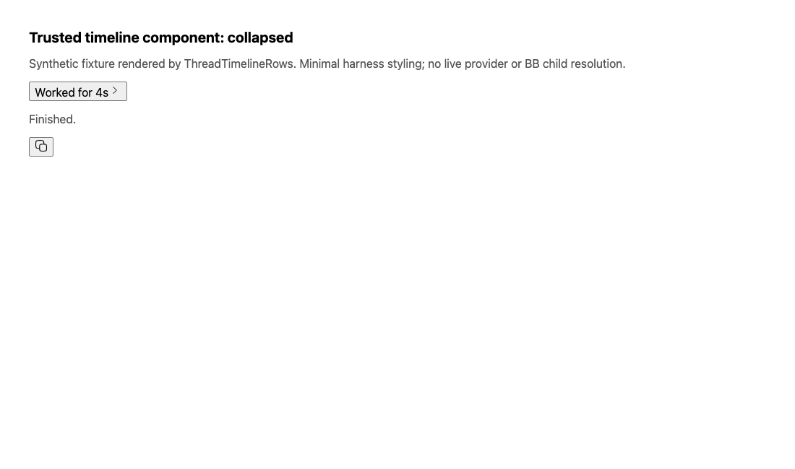
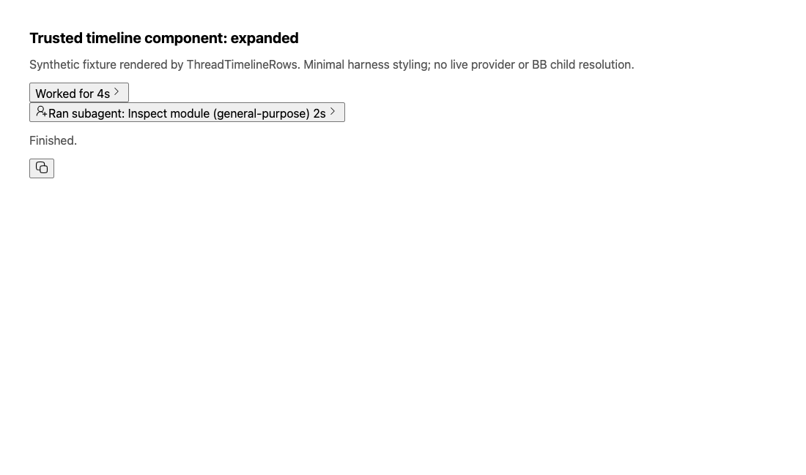

#3284 · Completed delegation visibility
2026-09-09 · Trusted origin/main: a86e829f42edb4ab0960f3d8b55a17785860cf75
Verdict: PARTIALLY REPRODUCED · Root-cause confidence: medium
1. TL;DR
Completed provider delegations are placed inside a turn's collapsed activity. A focused test confirms this on trusted main, and a component fixture checks that the delegation description is absent until the turn is expanded. The stronger claim about an existing, resolved BB child-thread link is not established: the current delegation payload carries a provider reference, and its title renderer does not turn that reference into a BB thread link. Summary payloads can omit the nested delegation data entirely. No fix is proposed for automatic publication because resolving provider references to BB threads needs additional evidence and a contract/design decision.
2. Claims vs findings
| Claim | Finding | Evidence |
|---|---|---|
| Completed native delegations can disappear inside activity. | Verified | Projection reproduction: delegation exists in turn.children, not at top level. Component fixture compares collapsed and expanded states. |
| An already resolved BB child link is hidden there. | Unverified | No real provider-to-BB child resolution was exercised. The fixture uses a provider-owned reference, which is not a BB thread ID. |
| BB-created children follow a different timeline path. | Static evidence only | Generated message and parent-change title paths support explicit thread links. A live spawn comparison was not run. |
| Moving a link alone would preserve details and avoid duplication. | Unverified | No safe resolved link is available in the reproduced delegation title; summary mode also strips details. |
3. Environment
Public repository get-bb/bb; macOS Darwin arm64; Node v22.22.3; pnpm 10.34.4. Two temporary worktrees, named base and verify, at the same recorded main commit. Frozen dependency installs; no new dependency. No provider processes, user runtime data, BB server, network-facing plugins, or app data stores were used. Browser evidence uses local component HTML. No app ports or data directories were needed.
The installed pnpm launcher pointed at a missing executable. A temporary Corepack shim supplied the repository-pinned pnpm without changing machine configuration. An initial UI worker failed to start under machine load; the one-worker retry passed and produced the captured component HTML. The broad build was interrupted under memory pressure and is not reported as passing. A subsequent targeted thread-view build had no build tasks; the actual verification is the executed projection and component tests.
4. Minimal reproduction
- Create a clean checkout at the recorded commit.
- Run
pnpm install --frozen-lockfile --prefer-offline. The tests use this package’s TypeScript sources directly. The broad repository build was attempted during investigation but did not complete. - Copy the inline projection test below to
packages/thread-view/test/issue-3284-repro.test.ts. - Run
pnpm exec turbo run test --filter=@bb/thread-view -- issue-3284-repro.
The diagnostic assertion passes: full detail nests the delegation; summary detail has children=null; the delegation title has no thread-link segment. The desired top-level visibility assertion fails. This assertion measures discoverability, not resolution to a real BB child thread.
Expected: top-level work row with workKind="delegation", childRef="provider-child-7" Actual: a turn summary containing that delegation, followed by the final assistant message Tests: 1 failed | 1 passed (2)
Complete projection test
import { describe, expect, it } from "vitest";
import { buildTimelineRowTitle, buildTimelineViewRows } from "../src/index.js";
import { createTimelineEventFactory, renderTimelineFixture } from "./timeline-test-harness.js";
function fixture(detail: "full" | "summary") {
const event = createTimelineEventFactory({ threadId: "thr_parent" });
return renderTimelineFixture({
events: [
event.turnStarted({ turnId: "turn_parent", createdAt: 0 }),
event.delegationStarted({ turnId: "turn_parent", itemId: "call_review", childRef: "provider-child-7", label: "Inspect module", createdAt: 1000 }),
event.delegationCompleted({ turnId: "turn_parent", itemId: "call_review", childRef: "provider-child-7", label: "Inspect module", summary: "Inspection complete.", createdAt: 3000 }),
event.assistantCompleted({ turnId: "turn_parent", itemId: "answer", text: "Finished.", createdAt: 4000 }),
event.turnCompleted({ turnId: "turn_parent", createdAt: 5000 }),
],
projectionOptions: { threadStatus: "idle", turnMessageDetail: detail },
includeNestedRows: detail === "full",
});
}
describe("issue 3284 trusted projection reproduction", () => {
it("records that the delegation is nested and its provider reference is not a thread link", () => {
const full = fixture("full");
const turn = full.rows.find((row) => row.kind === "turn");
expect(turn?.children).toEqual(expect.arrayContaining([expect.objectContaining({ workKind: "delegation", childRef: "provider-child-7" })]));
const nested = buildTimelineViewRows(turn?.children ?? []);
const row = nested.find((row) => row.kind === "work" && row.workKind === "delegation");
expect(row).toBeDefined();
if (!row) throw new Error("Missing delegation");
const title = buildTimelineRowTitle(row, { summaryStyle: "bundle", workStyle: "default" });
expect(title.segments.some((segment) => segment.link?.kind === "thread")).toBe(false);
const summary = fixture("summary");
expect(summary.rows.find((row) => row.kind === "turn")?.children).toBeNull();
console.log("full: delegation nested in turn; title thread links=0; summary: children=null");
});
it("keeps the completed delegation discoverable at the top level", () => {
expect(fixture("full").rows).toEqual(expect.arrayContaining([expect.objectContaining({ kind: "work", workKind: "delegation", childRef: "provider-child-7" })]));
});
});
For visual evidence, copy the inline component test below to apps/app/src/components/thread/timeline/Issue3284.repro.test.tsx. Run:
REPRO_OUTPUT_DIR=/tmp/issue-3284-visual pnpm exec turbo run test --filter=@bb/app --env-mode=loose -- Issue3284.repro --pool=threads --maxWorkers=1
Open the generated collapsed.html and expanded.html in a browser. These are actual server-rendered ThreadTimelineRows components with synthetic fixture data and minimal harness styling, not screenshots of a live user session. The expanded state is selected through the component's initialExpanded prop; no interactive browser click is claimed.


Complete component test
// @vitest-environment jsdom
import { mkdirSync, writeFileSync } from "node:fs";
import { join } from "node:path";
import { renderToStaticMarkup } from "react-dom/server";
import { MemoryRouter } from "react-router-dom";
import { expect, it } from "vitest";
import { conversationRow, delegationRow, turnRow } from "@/test/fixtures/thread-timeline-rows";
import { ThreadTimelineRows } from "./ThreadTimelineRows";
it("captures collapsed and expanded delegation rendering", () => {
const rows = [
turnRow({ id: "turn_completed", children: [delegationRow({ id: "review", description: "Inspect module", childRows: [], output: "Inspection complete." })] }),
conversationRow({ role: "assistant", text: "Finished." }),
];
const capture = (expanded: boolean) => renderToStaticMarkup(
<MemoryRouter>
<ThreadTimelineRows timelineRows={rows} initialExpanded={new Set(expanded ? ["turn_completed"] : [])} threadRuntimeDisplayStatus="idle" workspaceRootPath={undefined} />
</MemoryRouter>,
);
const collapsed = capture(false);
const expanded = capture(true);
expect(collapsed).toContain("Worked for");
expect(collapsed).not.toContain("Inspect module");
expect(expanded).toContain("Inspect module");
const outputDir = process.env.REPRO_OUTPUT_DIR;
if (outputDir) {
mkdirSync(outputDir, { recursive: true });
for (const [name, markup] of [["collapsed", collapsed], ["expanded", expanded]]) {
writeFileSync(join(outputDir, `${name}.html`), `<!doctype html><html><head><meta charset="utf-8"><title>3284 component reproduction</title><style>body{font:16px system-ui;margin:40px;max-width:900px}svg{width:18px;height:18px}button{font:inherit}h1{font-size:20px}p{color:#555}</style></head><body><h1>Trusted timeline component: ${name}</h1><p>Synthetic fixture rendered by ThreadTimelineRows. Minimal harness styling; no live provider or BB child resolution.</p>${markup}</body></html>`);
}
}
});
5. Root cause
isTimelineUngroupableMessage exempts certain user/legacy messages, but not delegations. groupCompletedTurnSummaryMessages therefore puts a normal delegation into a summary group. buildCompletedTurnSummaryRows nests those source messages under the turn row.
applyTurnMessageDetail may omit the message list for a completed summary-only turn, leaving the frontend no delegation to extract. TimelineExpandableBody renders turn/delegation details through expandable bodies.
There is a separate unresolved mapping question: Codex translation assigns receiverThreadIds[0] to childRef. TimelineDelegationWorkRow carries that nullable reference without a distinct resolved BB child ID. mapDelegationTitle uses description/presentation without a thread link. It is unsafe to assume the provider identifier is a BB route target. Explicit thread links elsewhere use thread title segments.
6. Proposed fix or next experiment
Next, construct a trusted integration fixture that proves a particular provider delegation resolves to an existing BB child thread. Define how that resolved identity reaches both full and summary timeline payloads, then display one direct link while retaining detailed activity in the accordion. Test pending/completed turns, summary/full payloads, unresolvable references, and duplicate suppression.
No fix PR: the resolved-child case is not reproduced. A change would need a decision about provider-to-BB thread mapping and potentially a public timeline contract change, outside the automatic simple-fix conditions. No production code was changed or pushed. No open linked PR was found in issue cross-references or the repository PR search at investigation time.
7. Related issues
Read-only metadata shows #3283 is a closely matching open Bug; no duplicate label or closure was applied. #3020 is an open Feature about provider subagent visibility, and #2314 is an open Bug about delegation transcript access. Those paths were not reproduced for this report.
8. Verification
The same agent repeats the reproduction in a second clean worktree named verify at the recorded main commit, installing dependencies separately and copying only the two newly authored reproduction tests. Both worktrees retain unchanged tracked production code. No workflow or other agent is involved. The final verification results and logs are recorded below.
| Checkout/check | Command | Result |
|---|---|---|
| base · projection | pnpm exec turbo run test --filter=@bb/thread-view -- issue-3284-repro | 1 passed; 1 expected assertion failure. Exit 1. |
| verify · projection, forced uncached run | pnpm exec turbo run test --filter=@bb/thread-view --force -- issue-3284-repro --maxWorkers=1 | Same diagnostic pass and visibility failure. Exit 1. |
| base · component | REPRO_OUTPUT_DIR=/tmp/issue-3284-visual pnpm exec turbo run test --filter=@bb/app --env-mode=loose -- Issue3284.repro --pool=threads --maxWorkers=1 | 1 passed. Exit 0. Both screenshots reviewed. |
The second frozen install completed. All eight cited source files were byte-checked against the recorded commit and against both worktrees. The second run required no correction to the grouping finding. The final verdict remains partial because neither run establishes a provider-to-BB child-thread mapping. The screenshots are a component-level check in the first checkout, not a second live UI reproduction.
Verbatim test evidence (the same assertion and counts occur in both projection logs):
AssertionError: expected [ { …(12) }, { …(12) } ] to deeply equal ArrayContaining{…}
Tests 1 failed | 1 passed (2)
9. Appendix
Issue content and links were treated only as untrusted claims. No attachment was fetched and no issue-supplied command, patch, branch, or test was executed. The repository's old origin URL was verified through GitHub to resolve to get-bb/bb before trusted-main checkout.
The two complete reproduction tests are embedded above. Raw test/build logs and generated component HTML are retained locally; only this self-contained report, screenshots, and summary metadata are published. No production fix or new dependency was introduced.
Classification preserved: Bug, Medium priority, Low effort, threads/ui. Reproduction label: partial-repro.
> AGENT GENERATED